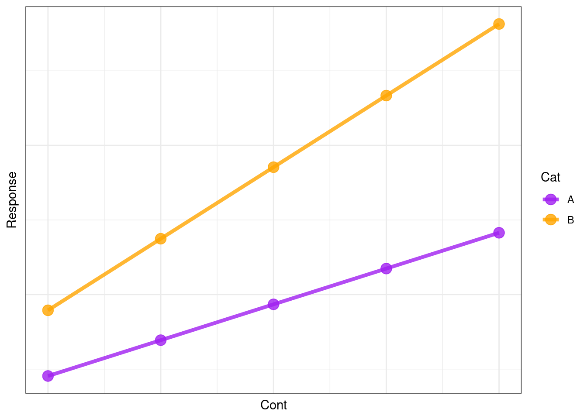
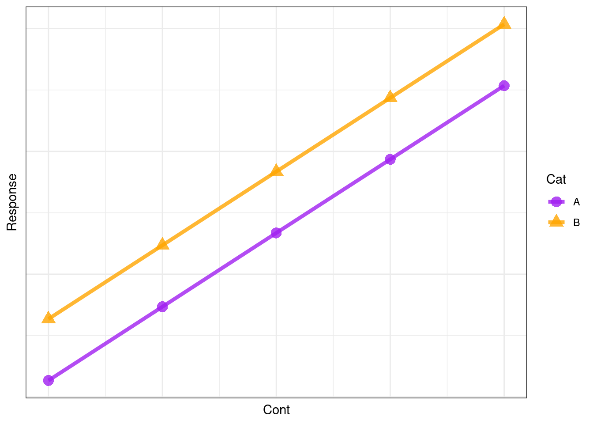
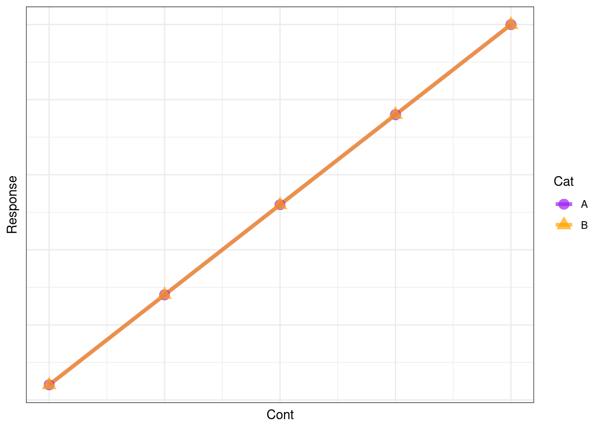
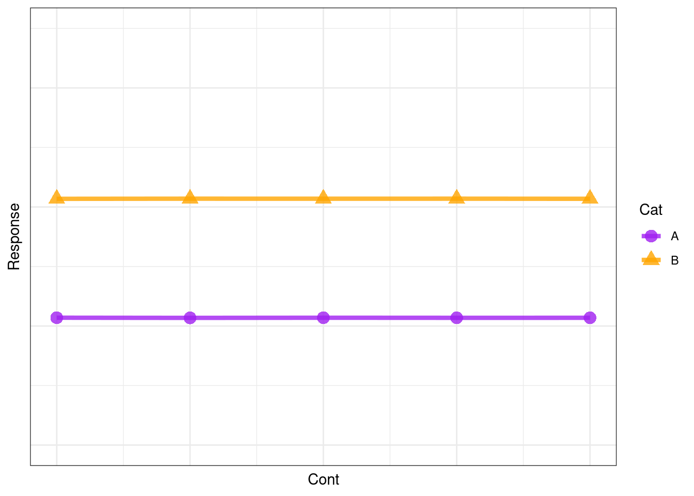
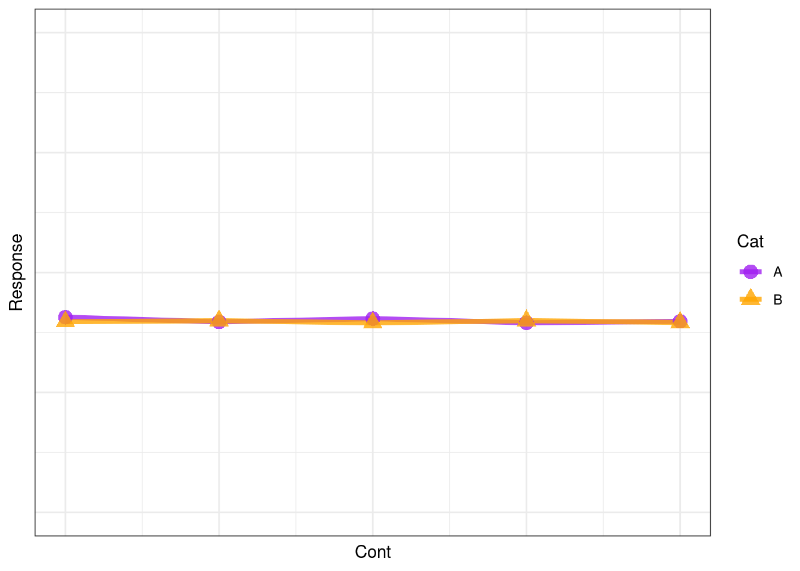

Statistical Modelling: Hypothesis
In this section you will:
identify your model terms (main effects and interactions)
present your research hypothesis in words and formula

Presenting your research hypothesis
Together your response and predictor variables make up your research hypothesis. In general terms, your research hypothesis can be presented in words as:
Variability in the response is explained by the predictor.
In R syntax, you present your hypothesis with a tilde “~” (pronounced “till-da”) which separates the response and predictor variables.
Response ~ Predictor + 1
Note here that the + 1 indicates that there will be an intercept in the model. We can leave this out of our hypothesis formula as R will add it by default, but I include it here for clarity.
Hypotheses with more than one predictor - including interactions
When you are considering more than one predictor, you need to consider the possibility of both main effects and interactions.
A main effect represents the direct independent effect of the predictor on the response.
An interaction represents that the effect of one predictor on the response depends on the value of the other predictor.
If your research hypothesis states that
Variability in the response (
Resp) is explained by independent effects of two predictors (Pred1andPred2)1
your hypothesis in R syntax would be:
Resp ~ Pred1 + Pred2 + 1
If your research hypothesis states that
Variability in the response (
Resp) is explained by effects of two predictors (Pred1andPred2with the effect of Pred1 depending on the value of Pred2)
your hypothesis in R syntax would be:
Resp ~ Pred1 + Pred2 + Pred1:Pred2 + 1
Note that : is used to denote an interaction. In this case, it is a two-way interaction between Pred1 and Pred2.2
Tip
R has a number of shortcuts for representing formulas in shortform. For example:
Resp ~ Pred1 + Pred2 + Pred1:Pred2 + 1
can be written as
Resp ~ Pred1*Pred2
i.e. * means to include all main effects and all possible interactions.
Another example:
Resp ~ Pred1 + Pred2 + Pred3 + Pred1:Pred2 + Pred2:Pred3 + Pred1:Pred3 + 1
can be written as
Resp ~ (Pred1 + Pred2 + Pred3)^2
which tells R to include all main effects and all possible two-way interactions between the three predictors.
Visualizing your hypothesis
To illustrate what we mean by interactions, we can visualize what different hypotheses are predicting will be observed. Assume you have a response Resp and two predictors, one that is continuous (Cont) and one that is categorical (Cat).
For a hypothesis of:
Resp ~ Cont + Cat + Cont:Cat + 1
you are hypothesizing that there is an effect of both Cont and Cat on Resp but the effect of Cont depends on the value of Cat. This can be illustrated as:
Note that the effect of Cont on Resp depends if Cat is A or B - this is the definition of an interaction. So this model includes all main effects and all interactions.
For a hypothesis of:
Resp ~ Cont + Cat + 1
you are hypothesizing that there is an effect of both Cont and Cat on Resp and that these effects are independent of one another. This can be illustrated as:

Note that the effect of Cont on Resp is the same regardless if Cat is A or B. This is a model of main effects only, and is also called an additive model.
For a hypothesis of:
Resp ~ Cont + 1
you are hypothesizing that there is an effect of Cont but no effect of Cat on Resp. This can be illustrated as:

Note that there is an effect of Cont on Resp but no effect of Cat (the lines are overlapping).
For a hypothesis of:
Resp ~ Cat + 1
you are hypothesizing that there is an effect of Cat but no effect of Cont on Resp. This can be illustrated as:

Note that there is no effect of Cont on Resp (the line is flat) but there is an effect of Cat on Resp (Resp is higher when Cat = B).
Finally, a hypothesis that there are no effects of either Cont or Cat on Resp we represent this as
Resp ~ 1
which can be illustrated as:

Note that the lines are overlapping (i.e. no effect of Cat) and the line is horizontal (i.e. no effect of Cont).
Important
The illustrations here are considering that there are no other sources of variability in Resp. In the real world, your observations will include variability that will be unexplained by your hypothesis. This will be due to measurement error as well as the effects of other, unmeasured predictors. We will discuss this in the sections to come.